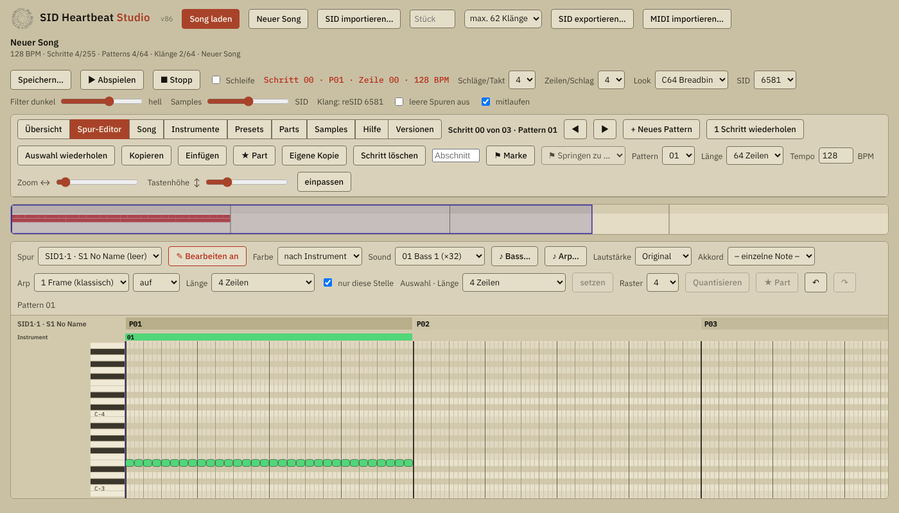

MUSIK FÜR DEN C64
C64-MUSIK IM BROWSER
Piano-Roll und Tracker für den SID-Chip
C64-Musik schreiben wie in einer DAW: Noten auf einer Klaviatur setzen, Akkorde, Arpeggios und Bassläufe erzeugen lassen und sofort mit dem SID-Klang anhören. Songs für den C64 Ultimate (Heartbeat) lesen und speichern, vorhandene .sid-Dateien einlesen oder die eigene Musik als .sid-Datei für Spiele und Demos ausgeben. Läuft direkt im Browser ohne Installation, auch offline. Deine Songs bleiben auf deinem Rechner.